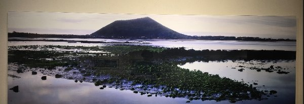

N.O.W 앱 · UI 개선 목업
Before / After — 기획팀 수정제안 반영
왼쪽이 현재 앱, 오른쪽이 개선안입니다. 코멘트는 화면 밖 폰 아래에 표기했습니다. 눌러야 이해되는 것(전체 카테고리·작품 점·글씨 크기)만 실제로 동작합니다.
1
카테고리 내비게이션
문제: 카테고리가 가로 스와이프 뒤에 숨어 11개 중 4개만 보임. 커스텀 카테고리라 안 보이면 존재를 모름. 개선: "전체" 버튼을 항상 같은 자리에 두고, 누르면 전 카테고리를 풀스크린 리스트로.
BEFORE
SKT 3:495G ▮▮ 55%
› 산이정원
오늘의 이벤트
공지
안내도테마정원
주요시설식물도감
산이정원에 오신 걸 환영합니다. 전라남도 바닷바람과 숲의 결이 함께 어우러지는 이곳은, 걸음을 옮길수록 풍경이 차분히 달라지는 정원이에요. 천천히 둘러보시다가 눈에 딱 들어오는 곳이 있으면 바로 말씀해 주세요.
오후 03:49
메시지를 입력하세요...
●칩 줄 오른쪽 › — 나머지 7개 카테고리는 스와이프해야 존재를 알 수 있음
현재 화면
→
AFTER
SKT 3:495G ▮▮ 55%
› 산이정원
오늘의 이벤트
공지
안내도
테마정원
전체
산이정원에 오신 걸 환영합니다. 궁금한 곳이 있으면 말씀해 주세요.
오후 03:49
메시지를 입력하세요...
전체 카테고리
안내도
안내도정원 전체 지도
카테고리
테마정원13개 정원 이야기
주요시설뮤지엄·갤러리
식물도감월별 식물 17종
체험안내투어·탐험대
이용안내요금·운영시간
오시는길주차 무료
소식행사물놀이장 OPEN
FAQ자주 묻는 질문
포토스팟촬영 명소 가이드
개화정보지금 피는 꽃
●👆 "전체" 버튼 — 누르면 풀스크린 리스트(아이콘+이름+설명). 항목을 고르면 챗봇이 바로 안내
개선안
안내도가 여러 개인 관광지 — 칩 줄 부분 확대 예시 (안내도 존만 좌우 스크롤, "전체"는 고정):
칩 줄 확대
전체
2
전시 안내도 — 김영갑갤러리 두모악
문제: 도면 위에 작품 썸네일 수십 장이 실좌표 그대로 붙어, 축소하면 뭉개지고 확대해야 하나씩 보임. 개선: 기획팀 수정제안 화면 그대로 — 전시관 분할 탭 + 도면 위 파란 점 + 점 선택 시 하단 작품 정보 + 오디오 가이드.
BEFORE


SKT 3:475G ▮▮ 56%
› 김영갑갤러리 두모악
공지
오늘의 이벤트
안내도시설안내관람안내
1전시실 바람앨범
위: 확대 상태 · 아래: 축소 상태 (실제 스크린샷)
●위 도면(확대) — 확대해야 겨우 한 작품씩 보임
●아래 도면(축소) — 썸네일 수십 장이 뭉개져 구분 불가, 관 구분·작품 정보 진입도 없음
현재 화면
→
AFTER
SKT 3:475G ▮▮ 56%
› 김영갑갤러리 두모악
안내도시설안내관람안내
2전시실 오름앨범
안내도 >2전시실 오름
🚹🚺
두모악관
하날오름관
유품전시실
F1 작품
wall A
오디오 가이드 듣기
이전 작품
1/8
다음 작품
●👆 도면의 파란 점·전시관 탭·오디오 버튼이 동작합니다. 점을 누르면 하단에 해당 작품 정보
●기획팀 수정제안 화면(전시 안내도 #1·#4)을 그대로 재현 — 전시관 분할 + 작품 정보 + 오디오 가이드
개선안 (기획팀 제안 반영)
3
지도 홈 — 검색바 삽입
문제: 검색이 지도 위 작은 돋보기 아이콘 하나에 숨어 있어 눈에 안 띔. 개선: 기획팀 #1 방식 — 지도 위 검색바 상시 노출. (정지 화면으로 충분해 인터랙션 없음)
BEFORE
 MY
MY
SKT 3:475G ▮▮ 56%
☀️ 영등포구 28°C
MY
●지도 우상단 돋보기 — 검색이 아이콘 하나에 숨어 있어 유일한 진입점이 눈에 안 띔
현재 화면
→
AFTER
SKT 3:475G ▮▮ 56%
☀️ 영등포구 28°C
●지도 상단 검색바 상시 노출, 보조 버튼은 검색바 아래 오른쪽 세로 배치 (기획팀 #1 화면 그대로)
개선안 (기획팀 #1)
4
더보기 — 글씨 크기 설정
요청: 고령 방문객을 위한 글씨 크기 조절. 개선: 더보기 목록에 "글씨 크기" 행 추가 — 3단계 선택, 채팅·안내 텍스트 전체에 적용.
BEFORE
SKT 3:475G ▮▮ 56%
공지사항
이벤트
나의 언어
포인트
음성설정
도움말
개인정보 처리방침
Version 1.0.194
●글씨 크기 관련 설정 없음
현재 화면
→
AFTER
SKT 3:475G ▮▮ 56%
공지사항
이벤트
나의 언어
글씨 크기
산이정원에 오신 걸 환영합니다. 채팅과 안내 글씨가 이 크기로 보여요.
음성설정
도움말
●👆 "나의 언어" 아래 새 행 — 작게/보통/크게를 누르면 미리보기 문장이 실제 크기로 변함
개선안